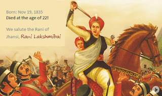

<!DOCTYPE html>
<html lang="en">

<head>
  <meta charset="UTF-8">
  <meta http-equiv="X-UA-Compatible" content="IE=edge">
  <meta name="viewport" content="width=device-width, initial-scale=1.0">
  <link rel="stylesheet" href="./style.css">
  <title>Tribute Page</title>
</head>

<body>

</body>

</html>


<div class="container-fluid" style="text-align: center;">
  <div class="" id="page-wrapper">
    <h1 class="text-primary text-center">A Tribute Page: Rani Lakshmi Bai</h1>
    <div class="row">
      
    </div>
    <div class="row">
      <h2>THE RANI OF JHANSI / RANI LAKSHMI BAI</h2>
      <div class="info-paras">
        <p>
          Lost her mother at a tender age of four.
          Raised by her father ,educated at home,she took formal training in martial arts which included archery,
          horsemanship, self-defence,fencing.

          Married to Gangadhar Rao, the Raja of Jhansi, at the age of 14,she was given the name 'Laxmibai'.In 1851, she
          gave birth to a son. Sadly, the child did not survive more than four months.In 1853, Gangadhar Rao fell sick
          and became very weak. So, the couple adopted a child.On 21st November 1853, Maharaja Gangadhar Rao died. Rani
          Laxmibai was just 18 at that time.
          "British wants Jhansi"
          Lord Dalhousie introduced the 'Doctrine of Lapse' which stated that if a ruler of a dependent state died
          without
          leaving a natural born heir,his kingdom would lapse to British Empire.

          The British authorities confiscated the state jewels. Also, an order was passed asking the Rani to leave
          Jhansi
          fort and move to the Rani Mahal in Jhansi. Laxmibai was firm about protecting the state of Jhansi.

          Rani Lakshmi Bai started strengthening the defense of Jhansi and she assembled a volunteer army of patriots.
          Women were also recruited and given military training. Rani's forces were joined by warriors including Gulam
          Gaus Khan, Dost Khan, Khuda Baksh, Lala Bhau Bakshi, Moti Bai, Sunder-Mundar, Kashi Bai, Deewan Raghunath
          Singh and Deewan Jawahar Singh.She assembled 14,000 rebels and organized an army for the defense of the city.

          Gained back control of Jhansi
          While this was happening in Jhansi, on May 10, 1857 the Sepoy (soldier) Mutiny of India started in Meerut. On
          4th June 1857, the Sepoy regiment stationed at Jhansi revolted thereby breaking the British control and
          enabled Rani Laxmi Bai to rule Jhansi.

          Battles
          From the period between Sep-Oct 1857, Rani defended Jhansi from being invaded by the armies of the neighboring
          rajas of Orchha and Datia(allies of British rule).
          During this time, her qualities were repeatedly demonstrated as she was able swiftly and efficiently to lead
          her troops against skirmishes breaking out in Jhansi. Through this leadership Lakshmi Bai was able to keep
          Jhansi relatively calm and peaceful in the midst of the Empire’s unrest.

          Escape from Jhansi
          From August 1857 to January 1858 Jhansi under the Rani's rule was at peace.

          When the British forces arrived in March 1958,they found it well defended and the fort had heavy guns which
          could fire over the town and nearby countryside. Sir Hugh Rose, commanding the British forces, demanded the
          surrender of the city; if this was refused it would be destroyed.
          After due deliberation the Rani issued a proclamation:
          "We fight for independence. In the words of Lord Krishna, we will if we are victorious, enjoy the fruits of
          victory, if defeated and killed on the field of battle, we shall surely earn eternal glory and salvation."
          On 23rd March,1958,the British forces under the leadership of Sir Hugh Rose laid a protracted siege on Jhansi.
          Rani Jhansi with her faithful warriors decided not to surrender. The fighting continued for about two weeks.
          In the Jhansi army women were also carrying ammunition and were supplying food to the soldiers. Rani Lakshmi
          Bai was very active. She herself was inspecting the defense of the city. She rallied her troops around her and
          fought fiercely against the British.
        </p>
      </div>
    </div>
    <div class="footer">
      <p><em>Please visit</em> <a href="https://en.wikipedia.org/wiki/Rani_of_Jhansi" target="_blank">Wikipedia</a>.</p>

    </div>
  </div>
</div>